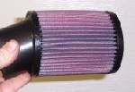

The rubber tube from the airbox to the carburettor hardens and shrinks with age. A hard or cracked tube lets unfiltered air and dirt in, and the extra air leans the mixture. On old bikes a new tube may not be sold.
Safety
- Engine off and cool. Fuel vapour burns.
- Keep clamps tight, because a loose tube leaks air.
Choose the replacement
- The correct maker tube first.
- If none can be found, use rubber that is made for fuel. Rubber not made for petrol, such as radiator hose, can swell, flake and fall apart inside, and pieces can go into the engine.
- A rubber fuel-filler hose from a car parts shop is one fuel-safe option. Sizes vary, and many are too large.
- Another way is to remove the airbox and fit a sock-type foam filter clamped straight onto the carburettor. Fit a cover to keep water off the foam.
Steps
- Remove the old tube. Note how the clamps sit.
- Clean the carburettor and airbox spigots.
- Fit the new tube and clamps, snug and straight.
- If you used rubber not made for fuel, run it for an hour or two, let it stand overnight and take it off to check. If it looks fine, run it longer, but keep checking it often for swelling or flaking.
- After any filter or airbox change, check the mixture: Check the mixture after changing the air filter or airbox.
Check your work
- No cracks, no gaps at the clamps and no movement of the tube when the engine runs.
- Idle is steady.